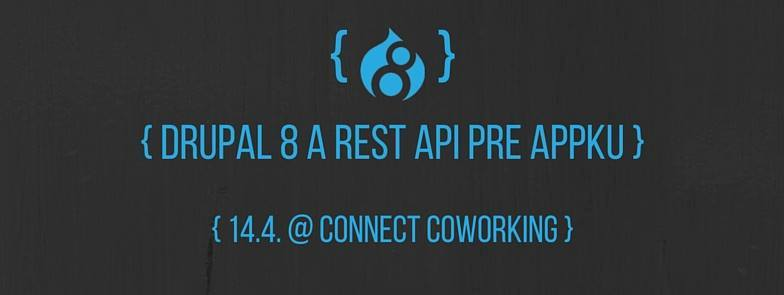
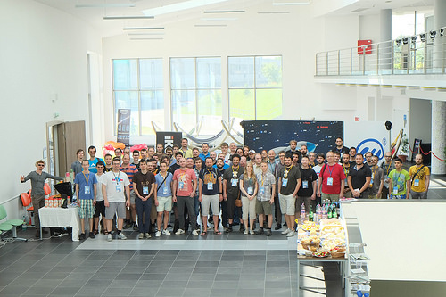
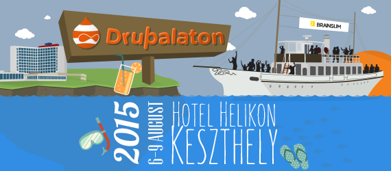

Blogy
Zhodnotenie roku 2016 a plány na rok 2017
2 január, 2017 - 01:10 poslal miromVšetkým vám želáme všetko dobré v roku 2017.
RESTful Drupal 8 - meetup - 14.4.2016
12 apríl, 2016 - 16:32 poslal sda
Aj v apríli vám prinášame meetup Drupalového Slovenska. Aprílová téma je Drupal 8 a REST API pre appku.
Prvý kontakt s Drupalom (Workshop: Základy Drupal 8)
8 február, 2016 - 11:46 poslal Matej HákačPrihlásil som sa na workshop: Základy Drupal 8 a celý týždeň som bol v očakávaní, aké to bude.
Na workshop som prišiel s riadnym časovým predstihom, ako to už mám vo zvyku, rád chodím na čas. :) Zo školenia som bol milo prekvapený.
Bolo na intrákoch Mladosť, z tých som bol prekvapený tiež. :D
Lektori boli super, keď som niečo nevedel venovali sa mi. Bolo vidieť, že Drupalom žijú.
PF 2016
31 december, 2015 - 17:30 poslal sdaRok 2015 končí už o pár hodín a nastal teda najvyšší čas bilancovať uplynulý rok.
Pripravované akcie v novembri
8 november, 2015 - 15:18 poslal sdaV novembri sme pripravili viacero akcií. Preto prinášame ich kompletný zoznam, aby ste o nich boli informovaní čo najskôr.
Drupal a SEO
4 november, 2015 - 09:59 poslal frankyeDrupal a SEO optimalizácia – poznámky z meetupu
28.10.2015 sme mali Drupal stretnutie na tému Drupal a SEO kde som mal prednášku.
Test hostingov - prečo, ako, čo
16 september, 2015 - 06:41 poslal sdaVýber hostingu je pre každého webového vývojára veľkou výzvou. Výberom zlého si môže pokaziť svoje meno, dobrý zase môže stáť nemalé finančné prostriedky. Preto vám Slovenská Drupal Asociácia prináša veľký test slovenských a českých hostingov.
DrupalCamp CS 2015 - spätný pohľad organizátorov
17 august, 2015 - 10:16 poslal sdaCez víkend 5–7.6. 2015 sme mali to šťastie zažiť prvý ČeskoSlovenský DrupalCamp – DrupalCamp CS.

Slnko, voda a Drupal na Drupalaton 2015!
8 júl, 2015 - 10:59 poslal mogdesign
Poďte na Drupalaton, ktorý sa bude konať 6.-9. Augusta v Keszthely, pri Balatone!
Odosielajte maily z views
4 júl, 2015 - 12:17 poslal frankyeNa Druaple mám rád flexibilitu a možnosti, ktoré nám dáva rozhranie ako fields, views, rules a podobne. Dosiahnuť sa toho dá skutočne veľa, niekedy je ale jednoduché a užitočné riešenie len za dverami, ktoré treba otvoriť, ale kľúč nie je úplne že v dierke – treba ho nájsť.
Dnes som riešil požiadavku, ako odoslať maily z views v Drupal7.
- 1
- 2
- 3
- 4
- 5
- 6
- 7
- 8
- 9
- …
- nasledujúca ›
- posledná »